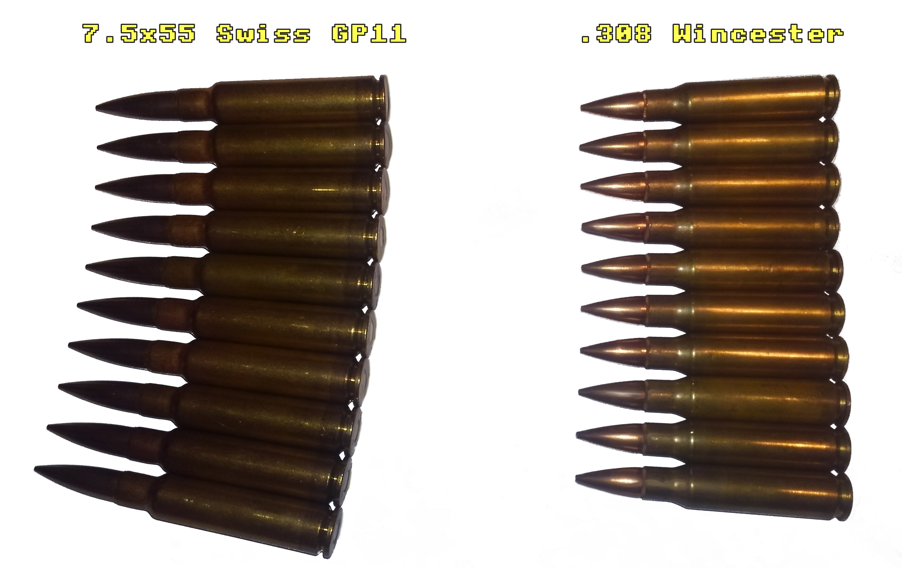
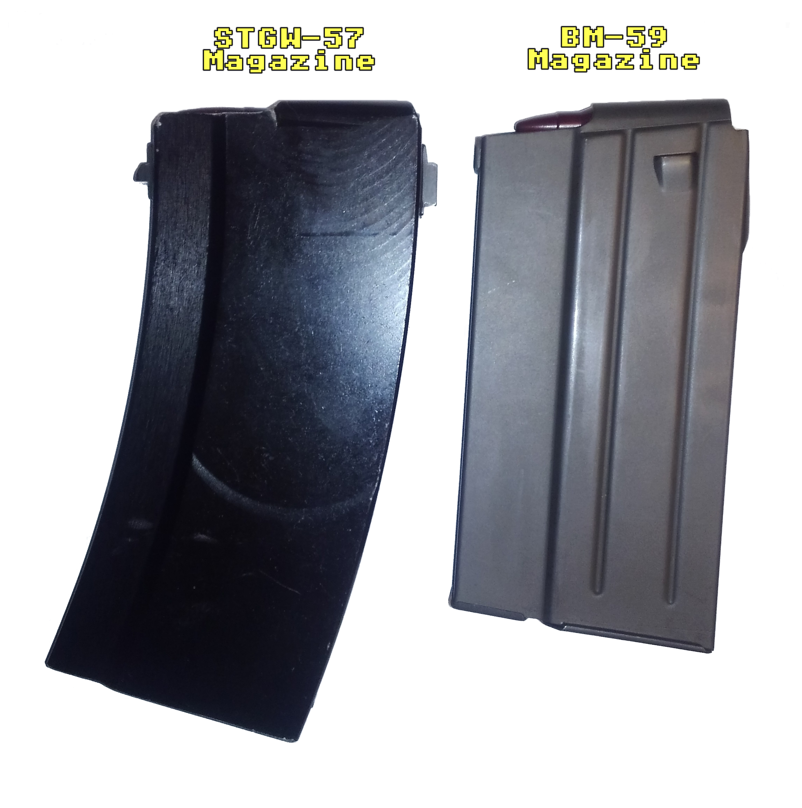

Obviously magazines for the STGW-57 in the US aren't exactly cheap. On top of that, they're not optimized to feed .308 Winchester. This project looks to solve that by providing a cheaper alternative specifically tailored for .308 Winchester. According to others that have .308 conversions, 7.5x55 Swiss magazines seem to work, though I don't personally like it for a couple reasons:
1. The taper of .308 is different than 7.5x55 Swiss.
2. The overall length of the cartridge is much shorter.
These two factors combine to make a less than repeatable presentation of the cartridge when loaded into the 7.5x55 Swiss magazine. The first problem is that the .308 is forced to follow the curvature of the magazine. The curvature of the magazine is normally dictated by the taper of the cartridge. In the case of an incorrect taper following the curvature, the cartridges aren't going to rest along each other's bodies. In this case of an excessive curvature, the cartridges will pivot about their transition to the neck.
Eventually this leads towards the feed lips of the magazine exerting most of the pressure towards the front of the body of the cartridge, and due to how the cartridge is supported, the body doesn't sit flush against the feed lips and the head of the cartridge is lower at the rear of the magazine. The severity of the angle bewteen the body and feed lips changes depending on how many cartridges are loaded, the more loaded the it is, the greater the angle. This is the first inconsistency in presentation.
The next problem, the overall length of the cartridge being shorter, adds another layer to the inconsistency. The shorter length of the cartridge affects the presentation since the cartridge can freely slip fowrard changing where the bolt initially contacts the cartrdige during loading. Another effect is that during the transition from the magazine to the chamber, there comes a point where the feed lips stop supporting the cartridge and the rear is free to come up and align with the chamber. If the cartridge is shorter, the feed lips should control the cartdige closer to the chamber to prevent the cartridge from flopping about and not being able to align with the chamber.
Our options fit into two main catagories, modify an existing magazine or making a new magazine. Making a new magazine in a low quantity and having it be of a good qulaity would most likely make it very expensive due to the amount of set-up required. Next, we could try some modification to the original STGW-57 magazines, though even if that fixes all of the mechanical issues, the base magazines themselves are still expensive. That leads us to modifying another existing magazines.
When choosing a magazine, we have to look for a few properties. The front of the STGW-57 magazine suddenly narrows at the front and has a portion in the trunnion that matches. This restriction either limits our magazine selection or requires a modification to the trunnion. I'd prefer to leave the trunnion alone as much as possible, which leaves us with two main available .308 surplus magazines:
•BM-59 Magazine
•.308 galil Magazine
Comparing the two, the BM-59 magazine is more availble, cheaper and upon inspection generally seems to be better built. Something about the .308 galil magazines, especially their finish, seemed chincy. Once I decided on the BM-59 magazine, I compared the dimensions with the STGW-57 magazine. I'm happy to report that they are absurdly similar. Using digital calipers I found that by comparison to the STGW-57 magazine, the width at the rear is 0.5mm less, front to back it's 0.3mm less and the narrow width at the front is 0.1mm less, I honestly couldn't ask for a better fit. The fact they're all slightly less is good too since we can always add material if we need to, reducing a dimension is obviously a different story with a hollow stamping.
So with our goal of getting the BM-59 magazine to fit, align and lock in the magazine well of a STGW-57, we'll have to make a front and rear tab and attach them to the magazine. I decided welding would be the easiest option, and I made sure all cuts for the parts could be made with a 90° end mill. I thought using a dovetail cutter might be neccessary but it isn't. For assembly, besides the tabs themselves, you only need a block to set the height of the rear tab. The front tab is indexed off of the existing front magazine tab. The main steps are to prep the weld areas of the magazine, align tabs, tack and weld. You can finish the tabs and weld area however you want. I believe the BM-59 magazines are phosphated, though I'm probably just going to cold blue the tabs and weld area for corrosion resistance.
You'll also have to do something about the two rear over-insertion stops on the side of the magazine so it can fit into the STGW-57 mag-well. Personally I'm just going to cut them off as a small gap isn't going to affect function. If you'd prefer you can weld a small sheet of metal over the gaps once you cut the over-insertion stop out and chamfter the tops so it doesn't get hung up on insertion. Keep in mind you've only got 0.25mm of width you can add to each side. Alternatively you can ignore removing them all together and find some way to bend them back flat. Instructions for fitting for tacking is included in the third page of the combined PDF. Download the files by clicking the links bewlow or view in the frame.
ZIP Package with PDF and CAD
If you've got a 7.5x55 STGW-57 parts kit and a .308 barrel, you've probably noticed the problem that the end of the jacket is no longer supported by the barrel. This would be fine if the jacket were fairly rigid like a free floated rail system, though it's a thin aluminum tube rivited to a part that is screwed onto the trunnion. This means that the front sight is free to wander with the unsupported jacket. Even if you don't plan to use iron sights, you should still fix this problem because the barrel can whip into the jacket while firing or vice-versa, which at the very least would lead to finish wear and dings.
Obviously we want to jam something between the barrel and the jacket to align them and transfer forces between them. The easiest solution would be a split tube which butts up against the chamfers of the muzzle break and first grenade launching ring. However I'd like to have nothing protruding past the end of the barrel jacket. This means we need either a friction fit or to touch off of another surface to stop our sleeve from sliding forwards. While this could be made from an aluminum or steel, a plastic should do the job just fine. While it should be machineable, it would probably be easiest to be 3-D printed.

The first thing I tried was using a wedge that when screwed closer, would open up the split ring giving a friction fit against the jacket. This ended up not being feasible due to the difference in diameter between the jacket and barrel not leaving enough room for any decent sized bolt.
This implementation relies off of using a step on the inside of the barrel jacket to interact with the chamfer on the O.D. of our part to stop the sleeve from sliding forward. I have a slot for an O-ring (115 O-ring, 11/16" I.D.) to help with both keeping it together during assembly and for better fitment between the jacket and barrel. Keeping it together during assembly is important because it has to come from behind the jacket, meaning you've got a nice ~18" narrow tube you've got to guide it down, so it's best just to let the O-ring hold it onto the barrel. You may have to experiment with the depth the groove, though I have it set in a slight slot right now. It also doesn't need to be heat resistant since whatever material you print will be a problem before the o-ring. I intend to 3-D print this, when I do I'll update this project with what I learn from it.
To download the CAD files, click the link below:
ZIP PackageWell I've got my pizza delivery tracker for the 3-D printed part.

However I neglected that people might also want a part that takes advantage of 3-D printing specifically and that I wouldn't need this extra design to be machinable. Below you can see that design and how it relies purely off of the grenade launching ring to index and would work more consistently as the depth from the jacket to ring might vary from assembly to assembly. By a quick look you can tell getting those internal features wouldn't be easy. You could use a boring bar but I don't think it wouldn't be worth the extra effort over the other version.


I'll try to get this one printed as well and you can download the files below:
3-D Print Optimized ZIP
To download the PDF/CAD files, click the links below:
PDF OnlyIf you're on a desktop browser you can just use the frame below to view/download the PDF.
Disclaimer: I did not make this particular drawing/package. It was sourced from a publicly listed library for resources related to the STGW-57.
This is a project I've been working on for a while. I started planning on stamping it, and I've moved to the idea of machining it, for now... Image below shows a sneak peek into it, most of the work from here on out is finding the facilities to make it and the process of physically making it. However, it will happen though.
.PNG)
I wanted a pistol grip for an AR-15, it's that simple. I do like the "Battle Grip" from HK, though I decided I wanted something a bit more unique. The pistol grip doesn't have significant stresses applied to it, it essentially just needs to survive being banged around. With that in mind I believe it's fine to 3-D print it.
The main thing to keep in mind when designing this is to make sure you can still assemble it. This is a concern because the grip angle isn't perpendicular to the mounting surface, so the bolt that screws into the lower receiver needs room in the off-angled grip to insert through the mounting hole. You can look below to compare the angle of the grip to the mounting surface.

I designed two slightly different grips with the main differences being where the top of the web of your hand goes and how the top mates with lower receiver. The flat topped one is more faithful to the original grip and better replicates the web to trigger distance of the actual STGW-57. The one with the angled top moves your hand up a bit and looks a little less goofy when on the reciever.


To download the CAD files, click the links below (Images below show how they look on the receiver):